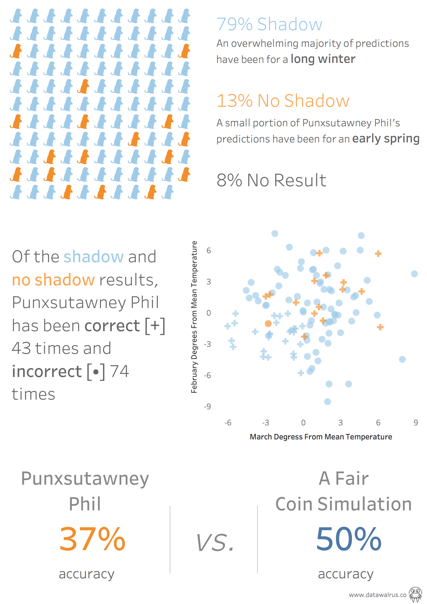

Cast No Shadow
It's that time of the year where we all wait for a large rodent to pop out and predict the weather for the next six weeks (I wonder if meteorologists get jealous of all the attention?). While this all seems very silly, it can be a real source of optimism for those dealing with frigid temperatures. In the past I've gotten my hopes up that Punxsutawney Phil (the groundhog) will predict an early spring and rid me having to defrost my car for 20 minutes. Being someone who has to analyze everything, I decide to see how accurate this little woodchuck was with his prognostications.
So, let's get to those insights!!
To accomplish the task of measuring Phil's accuracy I needed some key data points. I first had to find a record of all his predictions. It turns out there are some pretty detailed records of this information over at the stormfax almanac. Next, I needed US temperature information for February and March. The fine folks at the National Centers for Environmental Information (NOAA) had a really great resource for this.
Before we move further it's important to note some important information. When Phil appears he either sees his shadow, six more weeks of winter, or does not, an early spring.
Now that I had all this information I next had to determine the logic for assessing the accuracy of Phil's prediction. To do this I used the NOAA data to see whether February and March were colder or warmer than the national average. This would help me determine if there was an early spring or long winter. The basic logic was if either February or March had temperatures above the national average then it was an early spring. If both February and March were below the national average temperature then it was a long winter.
With all my data and logic established I was now able to visualize the distribution of Phil's predictions and his overall accuracy.

As you can see from my visualization, Phil is not really great with his predictions, coming in at 37% accuracy. If you left it purely to chance then you would have a significantly better outcome than Phil. Another interesting insight is how infrequently Phil does not see his shadow (13% of his predictions). This does seem to be changing in recent years - maybe Phil is more in tune with climate change? Furthermore, all of his predictions of an early spring have been correct expect for one year.
After all is said and done, I'm still going to check the news tomorrow to see if Phil saw his shadow or not. I'm guess he won't…but that's just me.
-DW